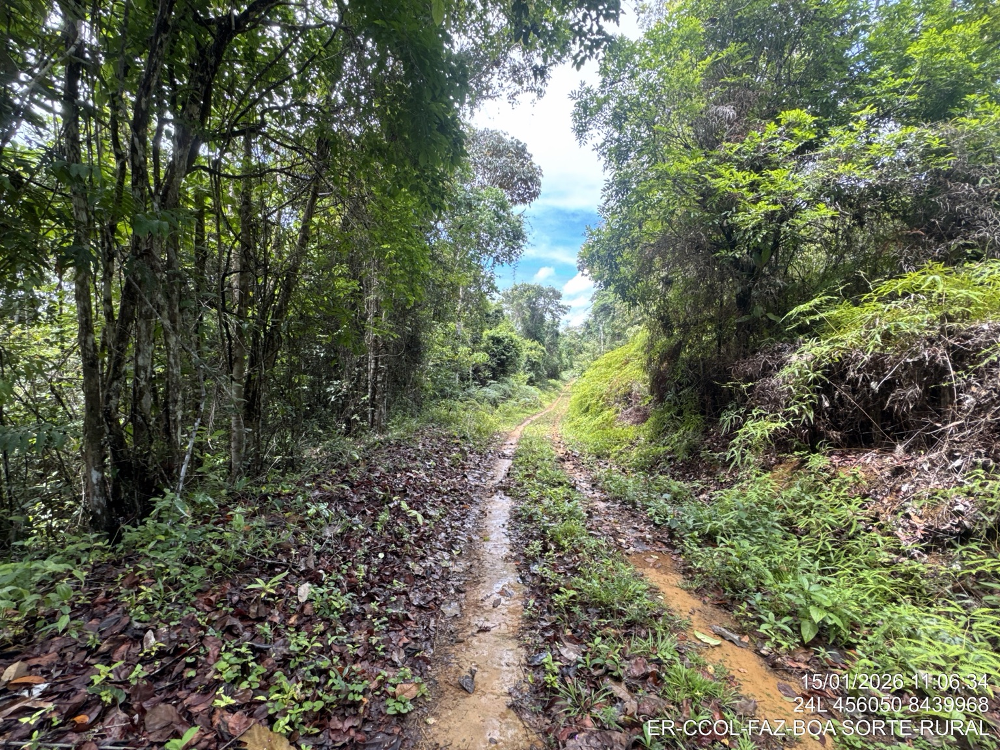
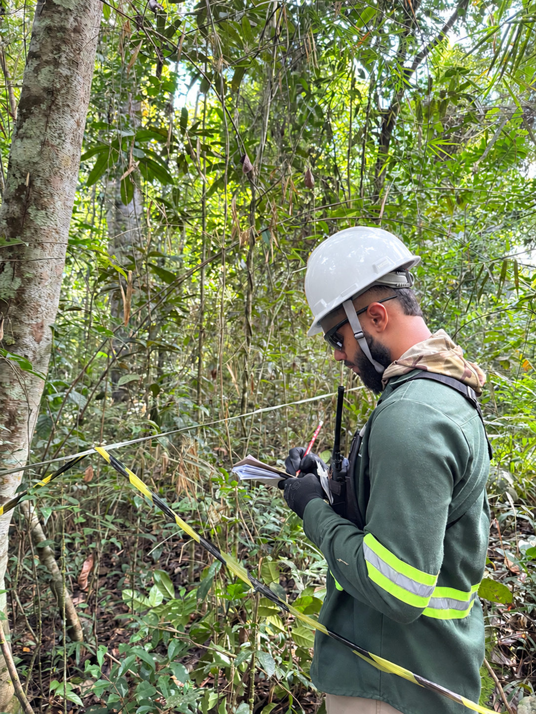

Licenciamento Ambiental
Estudos, relatórios e apoio técnico voltados ao atendimento das exigências ambientais aplicáveis a cada etapa do empreendimento.
Conhecer serviço →
Desenvolvemos soluções ambientais com rigor técnico, experiência de campo e abordagem personalizada para empreendimentos públicos e privados.

A JSB Soluções Ambientais atua no desenvolvimento e execução de soluções técnicas voltadas às diferentes etapas da gestão ambiental de empreendimentos.
Com experiência de campo e atuação orientada pelo rigor técnico, buscamos compreender as particularidades de cada projeto para oferecer soluções adequadas às suas necessidades ambientais e operacionais.
Atuamos em diferentes setores, integrando planejamento, execução em campo, tecnologia e elaboração técnica para apoiar nossos clientes no atendimento às exigências ambientais aplicáveis.
Atuamos em diferentes etapas da gestão ambiental, integrando estudos, campo, monitoramento, geotecnologias e elaboração técnica.
Estudos, relatórios e apoio técnico voltados ao atendimento das exigências ambientais aplicáveis a cada etapa do empreendimento.
Conhecer serviço →Resgate, monitoramento e proteção da fauna silvestre com equipe especializada em campo.
Conhecer serviço →Avaliação e monitoramento de parâmetros ambientais, incluindo análises de água, solo, sedimentos, resíduos, efluentes, qualidade do ar e níveis de ruído.
Conhecer serviço →Ações de educação ambiental para conscientizar, capacitar e engajar trabalhadores, comunidades e públicos envolvidos nos empreendimentos.
Conhecer serviço →Mapeamento e análise territorial com drones, GIS e sensoriamento remoto.
Conhecer serviço →Planejamento e acompanhamento de medidas de recuperação, revegetação e monitoramento de áreas impactadas.
Conhecer serviço →Apoio técnico para caracterização da vegetação, inventários, acompanhamento ambiental de supressão e medidas associadas.
Conhecer serviço →Conheça algumas das frentes que podem compor nossos escopos técnicos, de forma isolada ou integrada conforme as necessidades de cada empreendimento.
Atividades de afugentamento, resgate, manejo e soltura de fauna silvestre durante intervenções ambientais.
Conhecer serviço →Monitoramento de diferentes grupos faunísticos, incluindo aves, mamíferos, répteis e anfíbios, conforme o escopo e as exigências de cada projeto.
Conhecer serviço →Caracterização da vegetação, inventários e acompanhamento ambiental de intervenções com integração de fauna e cartografia.
Conhecer serviço →Levantamentos aéreos e geração de produtos cartográficos para apoio ao planejamento e às análises ambientais.
Conhecer serviço →Levantamento quali-quantitativo da vegetação para caracterização, planejamento e suporte a estudos ambientais.
Conhecer serviço →Produção de mapas temáticos e produtos geoespaciais para estudos, relatórios e planejamento ambiental.
Conhecer serviço →Planejamento de campanhas, coleta de amostras e organização de resultados para avaliação da qualidade da água.
Conhecer serviço →Utilizamos tecnologias, softwares e equipamentos de acordo com as necessidades de cada projeto, incluindo recursos disponibilizados por parceiros especializados.
Acreditamos que a preservação ambiental e o desenvolvimento caminham juntos. Transformamos conhecimento científico em soluções sustentáveis que protegem a biodiversidade, respeitam as comunidades e viabilizam empreendimentos responsáveis para as próximas gerações.
Conteúdo técnico em linguagem objetiva, com referência à legislação e às fontes oficiais para apoiar decisões e acompanhar mudanças regulatórias.
Descreva uma situação e encontre referências legais relacionadas, com acesso às fontes oficiais.
Pesquisar legislação →Entenda situações ambientais comuns e avance para os fundamentos legais relacionados a cada pergunta.
Explorar dúvidas →Referências de âmbito federal em rotação, com resumo inicial e acesso direto às fontes oficiais. Normas estaduais aparecem na Base Legal após a seleção do estado.
Conteúdo de caráter informativo. A aplicação da legislação depende das características do empreendimento, da localização e da autoridade ambiental competente.
Envie sua demanda e fale com a JSB Soluções Ambientais.
Para agilizar o entendimento do escopo, informe sempre que possível a cidade/UF, o tipo de empreendimento, o serviço ou necessidade ambiental e o prazo previsto.
contato@jsbsolucoesambientais.com.br Enviar solicitação por e-mail